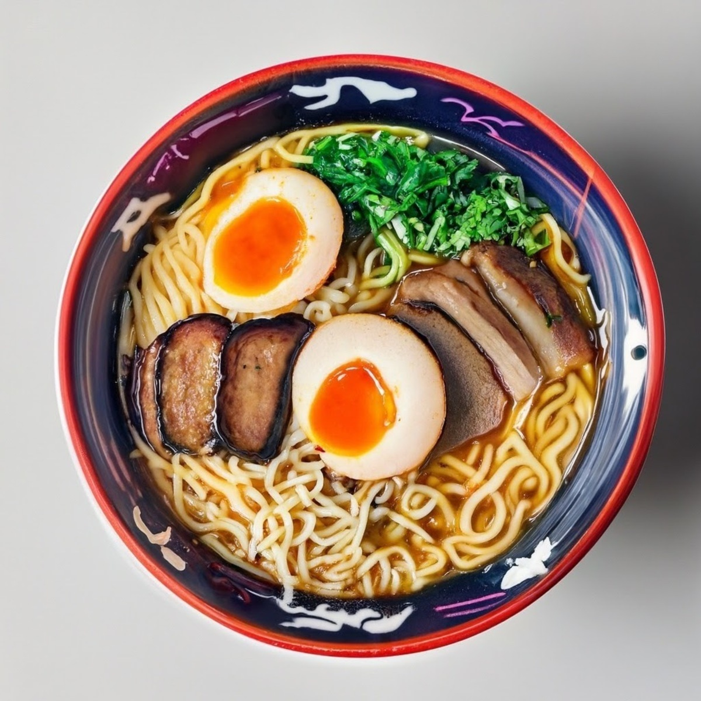
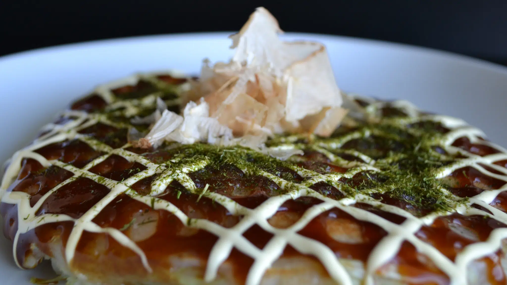
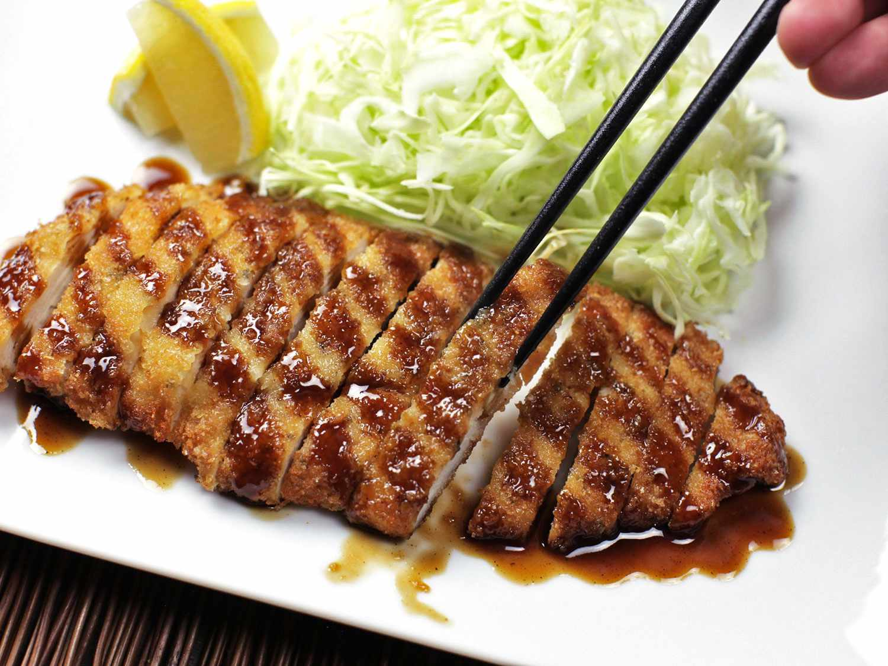

Sushi
Vinegared rice paired with raw fish, seafood, or vegetables, often served with soy sauce, wasabi, and pickled ginger.
Ingredients and Steps
Ingredients:
- 2 cups sushi rice
- 2 1/2 cups water
- 1/2 cup rice vinegar
- 2 tablespoons sugar
- 1 teaspoon salt
- Nori (seaweed sheets)
- Fresh fish (such as tuna, salmon) or other seafood
- Vegetables (such as cucumber, avocado, or carrot)
- Soy sauce, wasabi, and pickled ginger for serving
Steps:
- Rinse the sushi rice under cold water until the water runs clear. Combine the rice and water in a rice cooker and cook according to the manufacturer’s instructions.
- In a small saucepan, heat the rice vinegar, sugar, and salt until dissolved. Allow it to cool.
- Transfer the cooked rice to a large bowl and gently fold in the vinegar mixture. Let the rice cool to room temperature.
- Place a sheet of nori on a bamboo sushi mat. Spread a thin layer of sushi rice over the nori, leaving a border at the top edge.
- Arrange slices of fish and vegetables across the center of the rice.
- Using the bamboo mat, roll the nori tightly around the fillings. Press firmly to seal the edge.
- Cut the roll into bite-sized pieces using a sharp knife.
- Serve the sushi with soy sauce, wasabi, and pickled ginger.

Tempura
Made with fresh shrimp dipped in tempura batter and deep-fried until perfectly crispy.
Ingredients and Steps
Ingredients:
- 1/2 pound shrimp, deveined and peeled
- 1 cup assorted vegetables (such as bell peppers, sweet potatoes, zucchini, and mushrooms), sliced
- 1 cup all-purpose flour
- 1 large egg, chilled
- 1 cup ice-cold water
- Vegetable oil for frying
- Tempura dipping sauce (optional)
Steps:
- In a large pot or deep fryer, heat the vegetable oil to 350°F (175°C).
- In a bowl, lightly beat the egg and then add the ice-cold water. Mix gently.
- Add the flour to the egg mixture, stirring briefly to combine. The batter should be lumpy; avoid overmixing.
- Dip the shrimp and vegetables into the batter, ensuring they are evenly coated.
- Carefully place the coated shrimp and vegetables into the hot oil, frying in batches to avoid overcrowding.
- Fry until golden and crispy, about 2-3 minutes for shrimp and 1-2 minutes for vegetables. Remove and drain on paper towels.
- Serve immediately with tempura dipping sauce, if desired.

Ramen
Noodle soup with various toppings like sliced pork, egg, seaweed, and green onions in a flavorful broth.
Ingredients and Steps
Ingredients:
- 4 cups chicken broth
- 4 cups pork broth
- 1 tablespoon soy sauce
- 1 tablespoon miso paste
- 2 cloves garlic, minced
- 1 teaspoon ginger, grated
- 4 servings of ramen noodles
- 1/2 pound pork belly, thinly sliced
- 2 soft-boiled eggs, halved
- 1 cup chopped green onions
- 1/2 cup sliced mushrooms
- Nori (seaweed) sheets, cut into strips
- 1 tablespoon sesame seeds
Steps:
- In a large pot, combine the chicken broth and pork broth. Bring to a simmer over medium heat.
- Add the soy sauce, miso paste, garlic, and ginger to the broth. Stir well to combine, then let it simmer for 15-20 minutes to allow the flavors to meld.
- While the broth is simmering, cook the ramen noodles according to the package instructions. Drain and set aside.
- In a skillet, cook the pork belly slices until they are crispy and cooked through. Remove from heat and set aside.
- Divide the cooked noodles among four bowls. Ladle the hot broth over the noodles, ensuring each bowl gets a generous amount.
- Top each bowl with sliced pork belly, half of a soft-boiled egg, chopped green onions, sliced mushrooms, nori strips, and a sprinkle of sesame seeds.

Sashimi
Thinly sliced raw fish or seafood, served with soy sauce and wasabi.
Ingredients and Steps
Ingredients:
- Fresh fish (such as tuna, salmon, or yellowtail)
- Soy sauce for dipping
- Wasabi
- Pickled ginger (gari)
- Optional: Shiso leaves, daikon radish, or other garnishes
Steps:
- Ensure the fish is extremely fresh and has been properly handled for raw consumption. It’s best to buy fish labeled as "sashimi-grade" from a trusted source.
- Using a very sharp knife, slice the fish into thin, even pieces. The thickness can vary, but it's often around 1/4 inch thick.
- Arrange the slices of fish on a serving platter. Garnish with shiso leaves, daikon radish, or other preferred garnishes.
- Serve the sashimi with soy sauce, wasabi, and pickled ginger on the side.

Okonomiyaki
Savory pancake made with batter, cabbage, and various toppings, drizzled with a special sauce and mayonnaise.
Ingredients and Steps
Ingredients:
- 1 cup all-purpose flour
- 2/3 cup water
- 2 eggs
- 2 cups finely shredded cabbage
- 1/2 cup chopped green onions
- 1/2 cup cooked shrimp or sliced pork (optional)
- Vegetable oil for frying
- Okonomiyaki sauce
- Japanese mayonnaise
- Bonito flakes (katsuobushi)
- Ao nori (dried seaweed flakes)
Steps:
- In a large bowl, mix the flour and water until smooth. Add the eggs and mix until well combined.
- Stir in the shredded cabbage, green onions, and your choice of cooked shrimp or sliced pork.
- Heat a small amount of vegetable oil in a large skillet over medium heat. Pour in enough batter to form a pancake about 1/2 inch thick.
- Cook until the bottom is golden brown and the pancake holds together, about 4-5 minutes. Flip and cook the other side until golden brown and cooked through.
- Transfer the okonomiyaki to a plate and drizzle with okonomiyaki sauce and Japanese mayonnaise.
- Sprinkle with bonito flakes and ao nori. Serve immediately and enjoy!

Tonkatsu
Ingredients and Steps
Ingredients:
- 4 boneless pork loin chops
- Salt and pepper to taste
- 1/2 cup all-purpose flour
- 2 large eggs, beaten
- 1 cup panko (Japanese breadcrumbs)
- Vegetable oil for frying
- Tonkatsu sauce
- Shredded cabbage
- Cooked rice
- Lemon wedges (optional)
Steps:
- Season the pork chops with salt and pepper on both sides.
- Place the flour, beaten eggs, and panko in separate shallow dishes.
- Dredge each pork chop in the flour, shaking off excess. Dip into the beaten eggs, then coat with panko, pressing gently to adhere.
- In a large skillet, heat vegetable oil over medium heat. Fry the breaded pork chops until golden brown and cooked through, about 3-4 minutes per side.
- Remove the pork chops and drain on paper towels to remove excess oil.
- Serve the Tonkatsu with tonkatsu sauce, shredded cabbage, and cooked rice. Garnish with lemon wedges if desired.
Breaded and deep-fried pork cutlet, usually served with shredded cabbage and a tangy sauce.